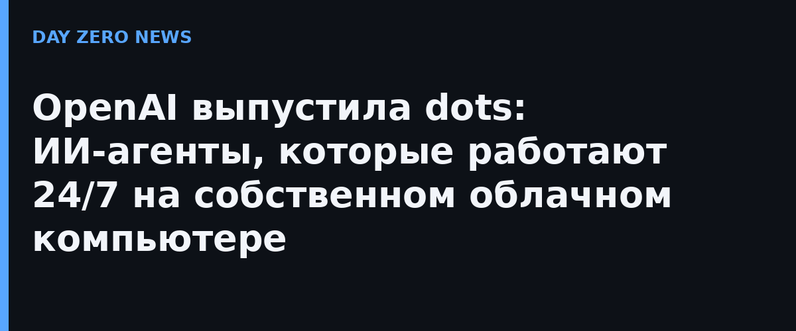

Каждый пользователь может завести себе агента (или несколько), дать ему имя и адрес вида @имя-dot. По описанию OpenAI, dots — это «постоянные агенты, созданные, чтобы справляться с чем угодно»: они продолжают работать в облаке, когда ноутбук выключен, принимают голосовые звонки из приложения, откликаются в Slack и Microsoft Teams, и эти переписки не расходуют лимиты подписки. Агент получает собственную облачную машину и браузер — то есть может сам ходить по сайтам и доделывать задачи без пользователя.
Корпоративным клиентам обещают «специализированных dots» с фиксированными ролями и собственными учётными данными; OpenAI говорит, что работает с Microsoft над интеграцией с платформой управления агентами Agent 365. Конкурентами продукта прямо называют Muse от Meta (вышел тремя неделями раньше) и Grok Bot от SpaceXAI.
Второй анонс — ChatGPT Space: общее рабочее пространство для команд на тарифах Pro, Business и Enterprise, где сотрудники и их агенты совместно редактируют документы. TechCrunch написал о запуске как о «похожем на собственный офисный пакет ChatGPT» — прямой вызов Microsoft. Одновременно сработали и другие новинки DevDay: планка Sign in with ChatGPT (16 партнёров-стартапов, среди них Notion), а также новый тариф Pro 500 за $500 в месяц с в 25 раз большим лимитом, чем у Plus, и эксклюзивным доступом к Ultrafast — при этом лимиты старого Pro-тарифа за $200, по сообщению TNW, урезали вдвое.
География запуска ограничена: подписчики Pro получают dots только старше 18 лет и за пределами ЕС, Великобритании и Швейцарии; в Business Premium идёт поэтапный раскат по всему миру, а в Enterprise администратор должен включить функцию вручную.